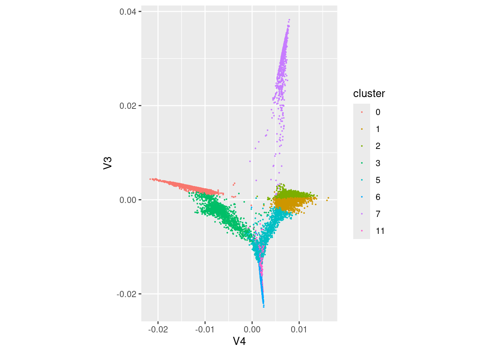
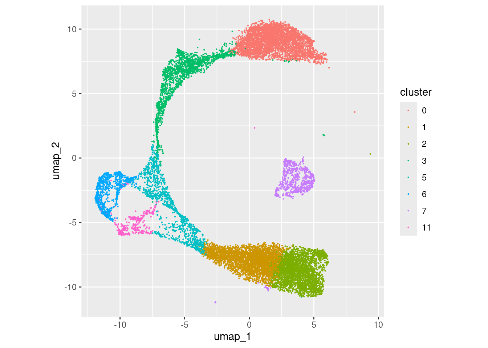
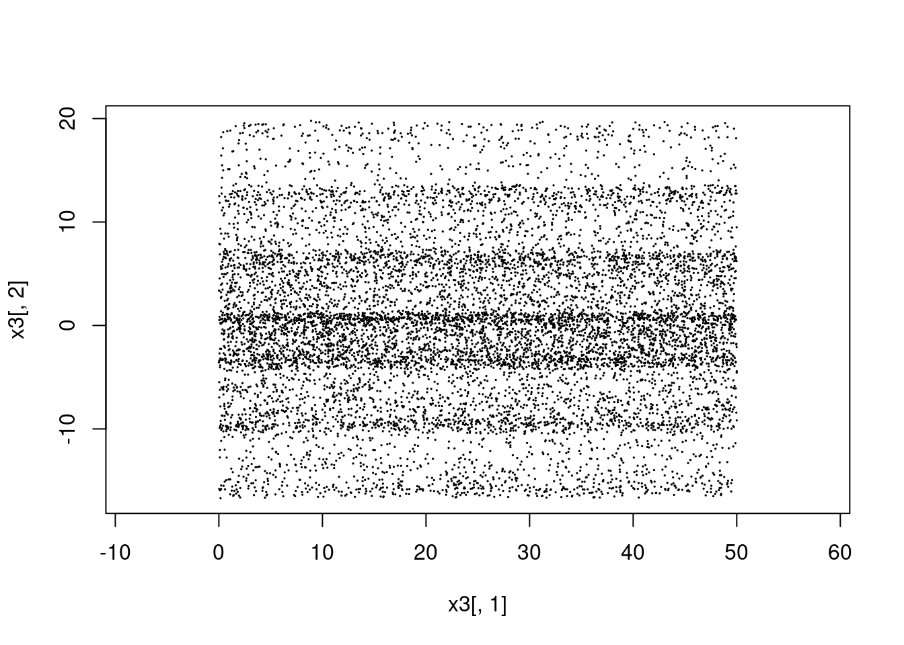
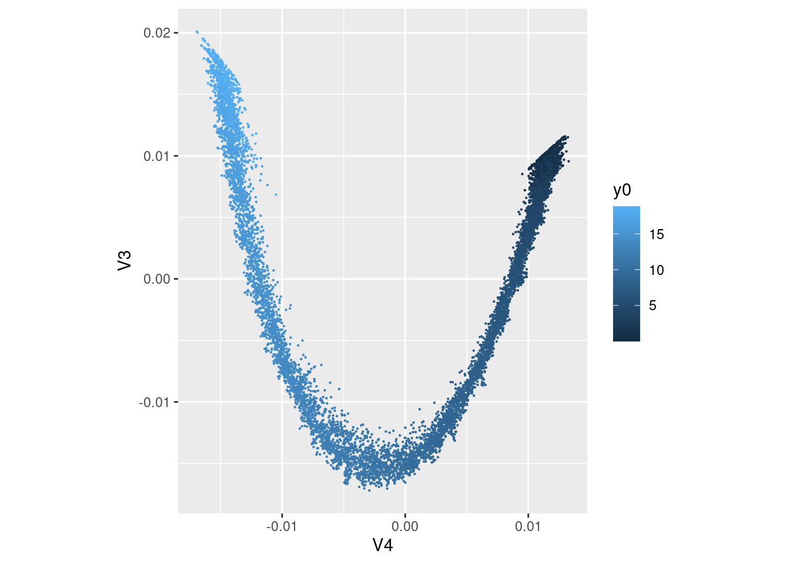
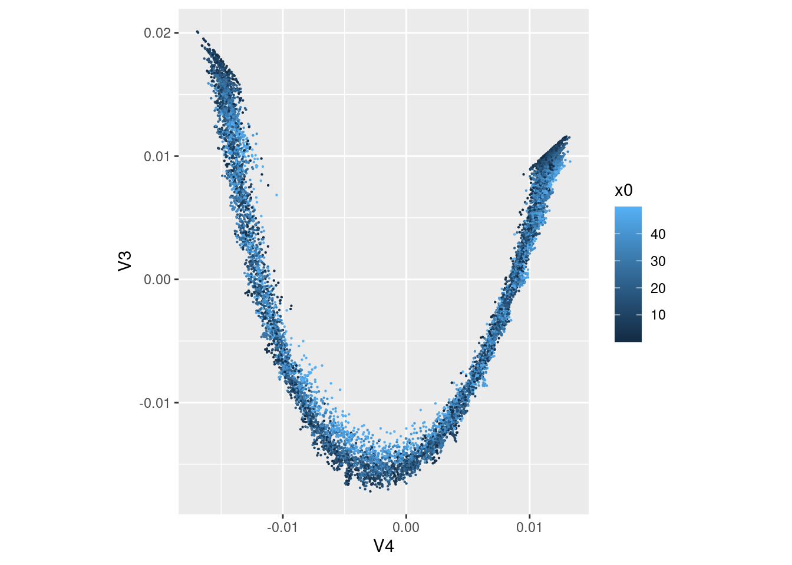
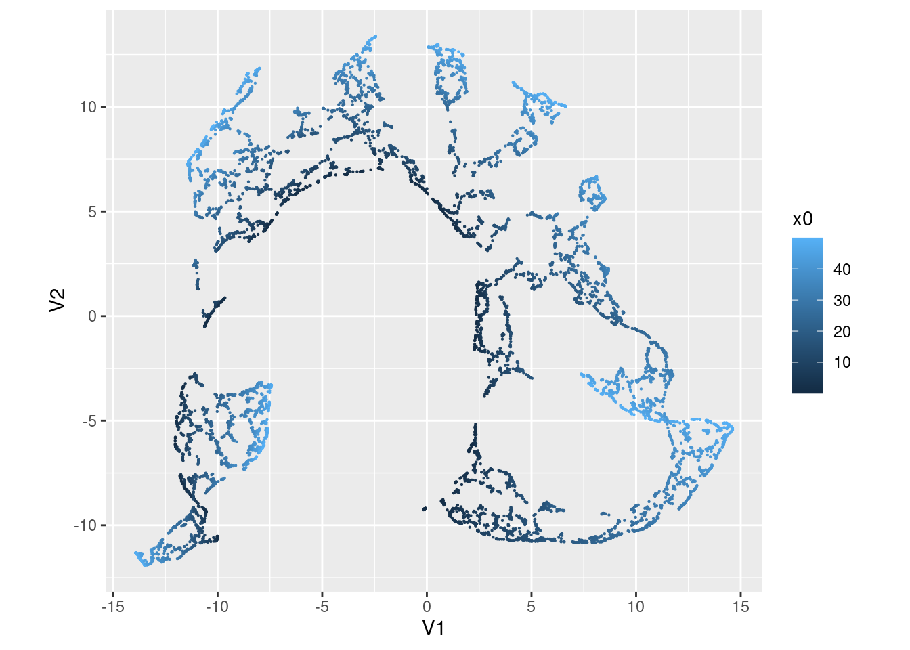
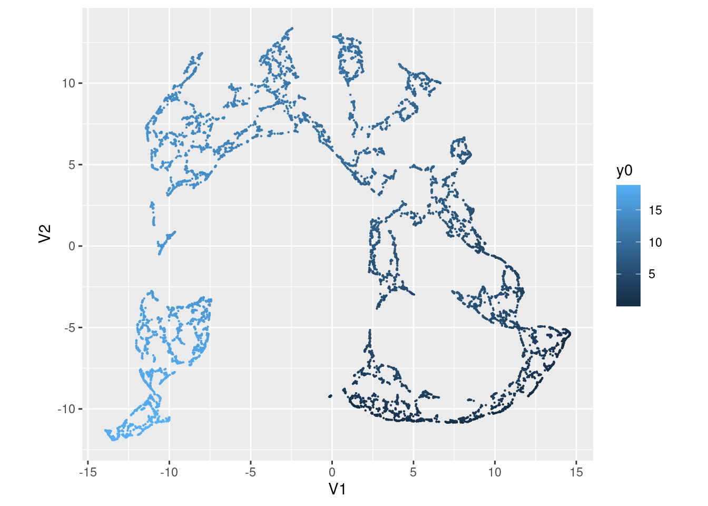

suppressPackageStartupMessages({
library( tidyverse )
library( Matrix )
library( sparseMatrixStats )
library( Seurat ) })
ReadMtx( "~/Downloads/ifnagrko/ifnagrko_raw_counts.mtx.gz",
"~/Downloads/ifnagrko/ifnagrko_obs.csv",
"~/Downloads/ifnagrko/ifnagrko_var.csv",
cell.sep=",", feature.sep=",", skip.cell=1, skip.feature=1,
mtx.transpose=TRUE) -> count_matrixLaplacian eigenmaps
Laplacian eigenmaps were introduced by Belkin and Niyogi in ther 2003 paper Laplacian Eigenmaps for Dimensionality Reduction and Data Representation (doi:10.1162/089976603321780317)
We will try out this method here.
Load example data
Before getting into the topic, we load the usual example data and performing standard preprocessing
count_matrix %>%
CreateSeuratObject() %>%
NormalizeData() %>%
FindVariableFeatures() %>%
ScaleData() %>%
RunPCA( npcs=20 ) %>%
FindNeighbors( dims=1:20 ) %>%
FindClusters( resolution=0.5 ) %>%
RunUMAP( dims=1:20 ) -> seuWarning: Feature names cannot have underscores ('_'), replacing with dashes
('-')Normalizing layer: countsFinding variable features for layer countsCentering and scaling data matrixPC_ 1
Positive: Apoe, Aldoc, Sparcl1, Sdc4, Ptn, Cmtm5, Glul, Gpr37l1, Fxyd1, Atp1b2
S100a1, Slc4a4, Slc1a3, Prxl2a, F3, Itm2b, Mt1, Rgcc, Prdx6, Sfxn5
Sat1, Scrg1, Dbi, Hes5, Luzp2, Plaat3, Pla2g7, Sash1, Plpp3, Sparc
Negative: Tubb5, Sox11, Tubb3, Stmn1, Jpt1, Hmgb3, Ptma, Sox4, Dlx2, Cd24a
Igfbpl1, Dlx6os1, Map1b, Stmn2, Abracl, Tmsb4x, Lmnb1, Cdca7, Ccnd2, Elavl4
Cdk4, Dcx, Arx, Uchl1, EYFP, Celf4, Dlx5, Nrxn3, H1fx, Hmgn2
PC_ 2
Positive: Ctss, C1qc, Laptm5, Csf1r, Trem2, C1qa, Cx3cr1, C1qb, Tyrobp, Ly86
Fcer1g, Siglech, Selplg, Fcrls, Tmem119, Fcgr3, Apbb1ip, Unc93b1, Cd53, Lpcat2
Spi1, Pld4, Olfml3, Irf8, Ctsh, Aif1, Cd300c2, Fyb, Otulinl, Mylip
Negative: Rorb, Cldn10, Clu, Mt3, Ntsr2, Mfge8, S1pr1, Id4, Slc1a2, Acsl6
Plpp3, Sox9, Ddah1, Bcan, Cxcl14, Btbd17, Mlc1, Cspg5, Fjx1, Aqp4
Ntm, Acsl3, Gabrb1, Tspan7, Lsamp, Chst2, Mt2, Lhx2, Slc39a12, Glud1
PC_ 3
Positive: Atp1a3, Camk2b, Snhg11, Syt1, Nrip3, Kcnj4, Scg2, Snap25, Dnm1, Pcp4
Icam5, Ndrg4, Eef1a2, Eno2, Ano3, Ryr2, Arpp21, Ptk2b, Gng4, Kcna4
Penk, Slc4a10, Snca, Gad1, Rprml, Grin2a, C1qtnf4, Shisa8, Camk2a, Kcnb2
Negative: Hmgb2, Top2a, Pbk, Birc5, Mki67, Cdk1, Cdca8, Spc24, Cenpf, Spc25
Prc1, Rrm2, Mdk, Nusap1, Tpx2, Cdca3, Knl1, Ckap2l, Esco2, Aurkb
Cenpm, Ccna2, Bub1, Cks2, Kif11, Hist1h3c, Hist1h1b, Hmmr, Pclaf, Fbxo5
PC_ 4
Positive: C1qc, C1qa, Ctss, Trem2, Csf1r, C1qb, Cx3cr1, Laptm5, Fcer1g, Tyrobp
Ly86, Siglech, Selplg, Fcrls, Fcgr3, Hexb, Spi1, Cd53, Itgb5, Pld4
Ptgs1, Cd300c2, Aif1, Irf8, Fyb, Itgam, Cyth4, Ltc4s, Otulinl, Cd37
Negative: Frzb, Apod, Npy, Plp1, Vtn, Foxd3, Wnt6, Nr2f2, Edil3, Sox10
Gsn, Matn4, Fbln2, Aspa, Aqp1, Igf1, Plat, Lpar1, Igfbp4, Erbb3
Fabp7, Plppr4, Ptgds, Col23a1, Alx3, Hey2, Cd59a, Fam3c, Scd1, Mybpc1
PC_ 5
Positive: Stmn2, Igfbpl1, Cd24a, Nrep, Sox4, Map1b, Stmn4, Tubb3, Shtn1, Dlx6os1
Dcx, Ly6h, Sox11, Jpt1, Mpped2, Stmn1, Plxna4, Pbx3, Elavl4, Uchl1
Runx1t1, Cald1, Foxp2, Dlx2, Gad2, Celf4, Pfn2, Dlx5, Sp8, Tubb5
Negative: Top2a, Pbk, Birc5, Mki67, Spc25, Cdk1, Prc1, Nusap1, Spc24, Esco2
Tpx2, Knl1, Aurkb, Cenpf, Cdca8, Ckap2l, Kif11, Cdca3, Hist1h3c, Hmmr
Ccna2, Bub1, Incenp, Hist1h2af, Ndc80, Cit, Fbxo5, Kif4, Sgo1, Kif22 Computing nearest neighbor graphComputing SNNModularity Optimizer version 1.3.0 by Ludo Waltman and Nees Jan van Eck
Number of nodes: 18302
Number of edges: 616069
Running Louvain algorithm...
Maximum modularity in 10 random starts: 0.9191
Number of communities: 19
Elapsed time: 4 secondsWarning: The default method for RunUMAP has changed from calling Python UMAP via reticulate to the R-native UWOT using the cosine metric
To use Python UMAP via reticulate, set umap.method to 'umap-learn' and metric to 'correlation'
This message will be shown once per session15:44:19 UMAP embedding parameters a = 0.9922 b = 1.11215:44:19 Read 18302 rows and found 20 numeric columns15:44:19 Using Annoy for neighbor search, n_neighbors = 3015:44:19 Building Annoy index with metric = cosine, n_trees = 500% 10 20 30 40 50 60 70 80 90 100%[----|----|----|----|----|----|----|----|----|----|**************************************************|
15:44:22 Writing NN index file to temp file /tmp/RtmpwAT4Yy/file50c1b7a618495
15:44:22 Searching Annoy index using 1 thread, search_k = 3000
15:44:29 Annoy recall = 100%
15:44:29 Commencing smooth kNN distance calibration using 1 thread with target n_neighbors = 30
15:44:31 Initializing from normalized Laplacian + noise (using RSpectra)
15:44:34 Commencing optimization for 200 epochs, with 776086 positive edges
15:44:44 Optimization finishedUMAPPlot( seu, label=TRUE ) + coord_equal()
We subset the object to only the “lineage”:
seu[ , seu$seurat_clusters %in% c( 0, 3, 5, 1, 2, 7, 6, 11 ) ] -> seul
seulAn object of class Seurat
20830 features across 14303 samples within 1 assay
Active assay: RNA (20830 features, 2000 variable features)
3 layers present: counts, data, scale.data
2 dimensional reductions calculated: pca, umapLaplacian eigenmaps
The idea of Laplacian eigenmaps is briefly as follwos: We assume that our data lives on a sub-manifold of the feature space, but is “lifted off” from it by random noise. Nevertheless, the graph formed by connecting each data point with its \(k\) nearest neighbors should recapitulate that manifold’s topology and also induce a metric of map on it.
Spectral analysis of the neighborhood graph’s Laplacian matrix should reveal something about it, for the follwoing reason: The data points are sampled from the manifold. In the limit of infinitely many data points, the graph Laplacian matrix can be shown to converge to the manifold’s Laplace-Betrami operator.
There are, of course, many choices on how to put weights on the neighborhood graph. We try out one popular approach in the following.
Neighborhood graph with Gaussian weights
We use a Gaussian distance kernel to obtain edge weights, i.e., for the edge from cell (vertex) \(i\) to cell \(j\), we chose \[ a_{ij} = \exp\left(-\frac{d_{ij}^2}{\sigma_{ij}^2}\right),\] where \(d_{ij}\) is the distance between cells \(i\) and \(j\) in feature space and \(\sigma_{ij}\) is a suitable kernel width.
For this to be a neighborhood graph’s adjacency matrix, we set \(a_{ij}=0\) if \(i\) and \(j\) are not neighbors. To make this concrete, we work with \(k\) nearest neighbors and consider two cells neighbors if at least on of them is among the other’s \(k\) nearest neighbors.
As we did for smoothing, we might chose that width in an “adaptive” manner, adaptiong to local density. An easy way to do so is to choose as kernel width, \(\signa_i\), for cell \(i\) the cell’s distance to its \(k'\)-th neighbor, using some \(k'<k\).
In order to make the adjancy matrix symmetric, Zelnik-Manor and Perona (2003) suggest to let \(\sigma_{ij}^2=\sigma_i\sigma_j\), i.e., we set the squared kernel width used when calculating the weight for the edge from cell \(i\) to cell \(j\) to the product of the distances of both cells’ respective \(k'\)-th nearest neighbor.
Calculating the neighborhood graph
We get for each cell its \(k=50\) nearest neighbors:
FNN::get.knn( Embeddings(seul,"pca"), k=50 ) -> nnWe set \(k'=20\) and hence take the \(sigma_i\) from the 20th column of the NN distance table.
sigma <- nn$nn.dist[,20]Now, we obtain the adjacency matrix as follows:
- For each \(i\) from 1 to \(k\), make a list of edges, namely from each cell \(j\) to its \(i\)-th neighbor \(j_i\), setting the edge weight to \(\exp(-d(j,j_i)^2/(\sigma(j)\sigma{j_i}))\), where \(d(j,j')\) is the distance of from cell \(j\) to its \(i\)-th neighbor and \(\sigma(j)\) is the distance of cell \(j\) to its \(k'\)-th neighbor.
- We concatenate these edge lists to one long one.
- Then, to properly symmetrize the matrix, we proceed as follows:
- For each edge, we sort the cell indices, such that the “left” index is the numerically smaller and the “right” index is the larger one.
- If two cells are mutual nearest neighbors, their edge appears twice (first with swapped indices, now with the same indices). We only keep one. Note that we should only check the vertex indices for equality, not the weights, to avoid falling for numerical inaccuricies (as floating point multiplication is not exactly commutative).
- We pass the edgelist to the
sparseMatrixfunction to form a sparse matrix. We request a symmetric matrix, causing the function to add the missing lower triangular part.
Here is the code:
ncells <- nrow(nn$nn.index)
map_dfr( 1:ncol(nn$nn.index), function(i)
tibble(
cell1 = 1:ncells,
cell2 = nn$nn.index[,i],
weight = exp( - nn$nn.dist[,i]^2 / ( sigma * sigma[nn$nn.index[,i]] ) ) ) ) %>%
mutate(
left = pmin( cell1, cell2 ),
right = pmax( cell1, cell2 ) ) %>%
arrange( left, right ) %>%
select( left, right, weight ) %>%
distinct( left, right, .keep_all=TRUE ) %>%
{ sparseMatrix( i=.$left, j=.$right, x=.$weight,
symmetric=TRUE, dims=c(ncells,ncells) ) } -> adjmWriting \(A\) for this adjacency matrix and \(D\) for the diagonal matrix of vertex degrees (\(D_{ij}=\delta_{ij}\sum_{j'}A_{ij'}\)), we obtain the scaled graph Laplacian as \(L = I - D^{-1/2} A D^{-1/2}\).
We get the smallest (by magnitude) eigenvalues and their eigenvectors.
invsqrtdegdiag <- sparseMatrix( i=1:ncells, j=1:ncells, x=1/sqrt(rowSums(adjm)), symmetric=TRUE )
scaled_laplacian <- sparseMatrix( i=1:ncells, j=1:ncells, x=1, symmetric=TRUE ) -
invsqrtdegdiag %*% adjm %*% invsqrtdegdiag
RSpectra::eigs_sym( scaled_laplacian, 5, which="SM" ) -> eigThe smallest eigenvalue is, as expected, 0:
eig$values[1] 6.819817e-03 2.641315e-03 2.175909e-03 4.455835e-04 4.656835e-16Here is a plot of the data points, using as 2D coordinates the eigenvectors corresponding to the two smallest non-zero eigenvalues. We colour by Leiden cluster.
as_tibble(eig$vectors) %>%
add_column( cluster=seul$seurat_clusters) %>%
ggplot +
geom_point( aes( x=V4, y=V3, col=cluster), size=.1 ) + coord_equal()Warning: The `x` argument of `as_tibble.matrix()` must have unique column names if
`.name_repair` is omitted as of tibble 2.0.0.
ℹ Using compatibility `.name_repair`.
For comparison, the UMAP, with the same colouring:
Embeddings(seul,"umap") %>%
as_tibble() %>%
add_column( cluster=seul$seurat_clusters) %>%
ggplot +
geom_point( aes( x=umap_1, y=umap_2, col=cluster), size=.1 ) + coord_equal()
Swiss roll
To make a Swiss role, prepare a biscuit batter and bake it in a tray to obtain a spongy rectangular biscuit cake. Put a layer of jam, then a thick layer of cream on top, the roll up the layered cake.
The Swiss role has inspired a standard “test manifold” to study dimension reduction:
First, we sample point from a 2D rectangle:
set.seed( 1324 )
n <- 10000
x0 <- runif( n, 0, 50 )
y0 <- runif( n, 0, 6*pi )Now, roll up the rectangle, using \(y_0\) both as rolling angle and as radius. For the radius, add some noise to make the biscuit fluffy.
r <- y0 + runif( n, 0, 1 )
cbind(
x0,
r * cos( y0 ),
r * sin( y0 ) ) -> x3Here’s a plot of the roll, looking head-on:
plot( x3[,2], x3[,3], cex=.1, asp=1 )
and from the side:
plot( x3[,1], x3[,2], cex=.1, asp=1 )
Now, let’s embed this 3D object into a 7D space, by chosing three random but orthonormal basis vectors. To do so, we chose three random vectors
random_vecs <- matrix( rnorm(21), nrow = 7, ncol = 3 )then orthogonalize them using QR decomposition (which is essentially a sophisticated variant of Gram-Schmidt)
random_orthonormal_basis <- qr.Q( qr( random_vecs ) )Now, let’s
x3 %*% t(random_orthonormal_basis) -> x
head(x) [,1] [,2] [,3] [,4] [,5] [,6] [,7]
[1,] 0.4144157 -8.778192 0.3285658 4.7389610 -5.612610 -4.126349 4.567517
[2,] -6.8567192 -20.994387 7.1659708 -0.1867122 12.491133 17.531947 -3.382384
[3,] -15.0072735 -33.209732 8.2908585 14.7320429 15.170257 21.642549 -1.562077
[4,] -12.0583660 -44.033499 8.4152476 18.5598476 5.050857 13.500057 5.503569
[5,] 3.6573425 -7.930982 2.6781130 -7.5061441 -1.509872 1.010143 1.174632
[6,] -8.1042127 -28.569759 5.3217416 12.8346638 3.158864 8.563515 3.707611Can we recover the initial 2D sheet (x0, y0) using eigenmaps?
FNN::get.knn( x, k=30 ) -> nn
nn$nn.dist[,18] -> sigma
map_dfr( 1:ncol(nn$nn.index), function(i)
tibble(
cell1 = 1:n,
cell2 = nn$nn.index[,i],
weight = exp( - nn$nn.dist[,i]^2 / ( sigma * sigma[nn$nn.index[,i]] ) ) ) ) %>%
mutate(
left = pmin( cell1, cell2 ),
right = pmax( cell1, cell2 ) ) %>%
arrange( left, right ) %>%
select( left, right, weight ) %>%
distinct( left, right, .keep_all=TRUE ) %>%
{ sparseMatrix( i=.$left, j=.$right, x=.$weight,
symmetric=TRUE, dims=c(n,n) ) } -> adjm
invsqrtdegdiag <- sparseMatrix( i=1:n, j=1:n, x=1/sqrt(rowSums(adjm)), symmetric=TRUE )
scaled_laplacian <- sparseMatrix( i=1:n, j=1:n, x=1, symmetric=TRUE ) -
invsqrtdegdiag %*% adjm %*% invsqrtdegdiag
RSpectra::eigs_sym( scaled_laplacian, 5, which="SM" ) -> eig
eig$values[1] 2.495667e-03 1.544439e-03 1.290361e-03 2.784866e-04 -3.108038e-15The eigenmap, coloured by y0:
as_tibble(eig$vectors) %>%
add_column( x0, y0 ) %>%
ggplot +
geom_point( aes( x=V4, y=V3, col=y0), size=.1 ) + coord_equal()
The eigenmap, coloured by x0:
as_tibble(eig$vectors) %>%
add_column( x0, y0 ) %>%
ggplot +
geom_point( aes( x=V4, y=V3, col=x0), size=.1 ) + coord_equal()
How does UMAP fare?
uwot::umap(x) -> umpColour by x0:
as_tibble(ump) %>%
add_column( x0, y0 ) %>%
ggplot +
geom_point( aes( x=V1, y=V2, col=x0), size=.1 ) + coord_equal()
and by y0:
as_tibble(ump) %>%
add_column( x0, y0 ) %>%
ggplot +
geom_point( aes( x=V1, y=V2, col=y0), size=.1 ) + coord_equal()